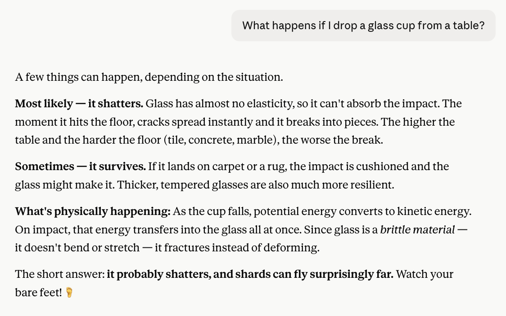
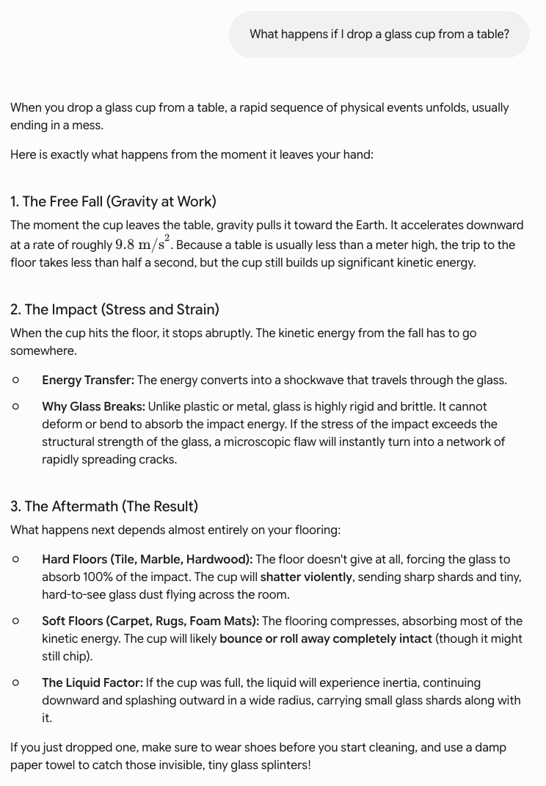

AI can write code and pass exams, but comparing 9.11 and 9.9 trips it up. I tested ChatGPT, Claude, and Gemini in two languages — and one stumbled in a fascinating way.
AI can write code, pass the bar exam, and explain quantum physics. But ask it which number is bigger — 9.11 or 9.9 — and something strange happens. I tested ChatGPT, Claude, and Gemini myself, and the results revealed one of the most fascinating limitations in modern AI.
This isn't a trick question. The answer is simply 9.9 (think of it as 9.90, which is clearly more than 9.11). A child who understands decimals gets this right. Yet this exact comparison has become a famous failure case for large language models — and testing it today, in 2026, shows the problem hasn't fully disappeared.
I asked all three chatbots the same question in both English and Korean:
Here's what happened.
In English, ChatGPT answered correctly and explained the place-value logic clearly:

But in Korean, something revealing happened. ChatGPT first answered that 9.11 was bigger — the wrong answer — then caught itself mid-explanation and corrected it: "I gave the wrong answer at first, let me correct it." Watching the model contradict itself in real time is a perfect window into how it actually works:

This self-correction is the most interesting result of the whole test. The model started down the wrong path — pattern-matching "11 is bigger than 9" — then its reasoning process caught the error. It got there, but the stumble shows the wrong instinct is still in there.
Claude answered correctly in both English and Korean, and notably named the trap directly — calling it "a common intuitive trap" where 11 feels bigger than 9, but place value is what matters:

Gemini also handled both languages correctly, walking through the place-value comparison step by step and even offering the "add a placeholder zero" trick (9.9 becomes 9.90):

This is the genuinely interesting part. Researchers have studied this exact failure, and the explanation reveals something fundamental about how AI works.
Large language models don't process numbers as values. They process them as tokens — fragments of text. The string "9.11" appears all over their training data as software version numbers (Python 3.9.11), dates (September 11), and section numbers. In many of those contexts, "9.11" comes after "9.9" — a later version, a later point. The model absorbs that pattern.
So when you ask "which is bigger," the model isn't doing arithmetic. It's pattern-matching what the answer usually looks like in the text it learned from. Researchers have a name for this: "computational split-brain syndrome." The model can explain the correct method for comparing decimals flawlessly — align the decimal points, compare digit by digit — while simultaneously failing to actually execute it. Knowing how and being able to do are two different things for an AI.
A 2026 academic paper put it bluntly: this isn't a bug that more training or better prompting will fix. It's a structural consequence of how these models represent symbols. They compare 9.11 and 9.9 "not through arithmetic but by pattern-matching what such calculations typically look like."
The takeaway isn't "AI is dumb." These same models can solve genuinely hard problems. The takeaway is more nuanced and more useful: AI's competence is uneven in ways that don't match human intuition. A human who can pass the bar exam can definitely tell you 9.9 is bigger than 9.11. An AI's abilities don't come bundled the same way.
This is exactly why blindly trusting AI output — especially for anything involving numbers, calculations, or precise logic — is risky. The model sounds equally confident whether it's right or wrong. ChatGPT in Korean stated the wrong answer with the same authority it later used to correct itself.
The practical lesson: use AI for what it's genuinely good at — language, drafting, explanation, ideation — and verify anything where precision matters. The 9.11 vs 9.9 test is a tiny, harmless example of a failure mode that becomes serious when the numbers are your finances, your medication doses, or your engineering calculations.
In my test, Claude and Gemini handled the comparison correctly in both languages. ChatGPT got it right in English but initially failed in Korean before self-correcting. The deeper point: AI processes numbers as text patterns, not values — a structural limitation that explains why a system that can write code might still trip over grade-school decimals. Trust AI for language. Verify it for math.